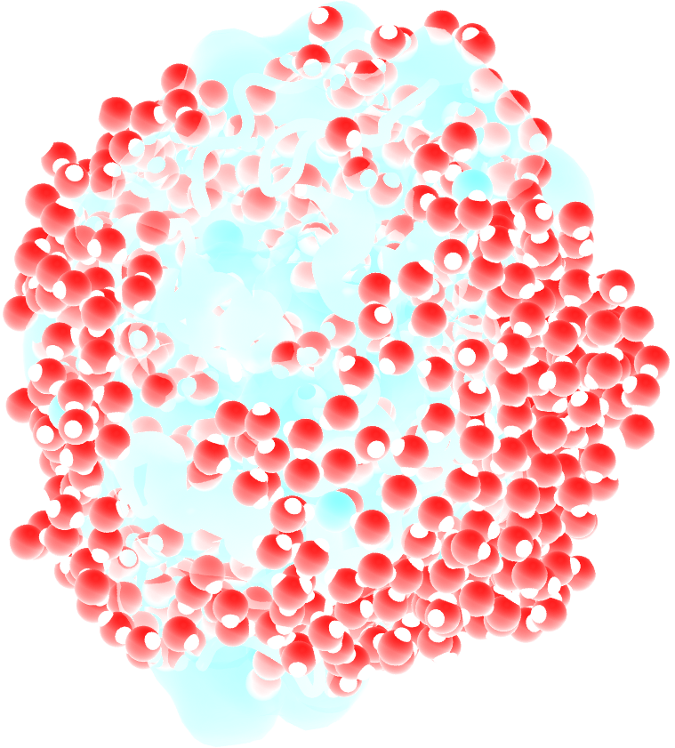
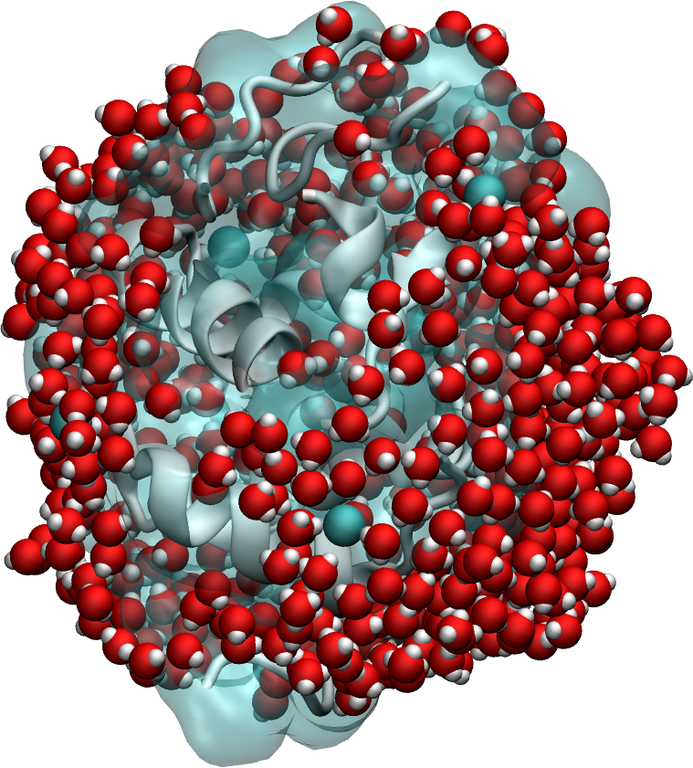
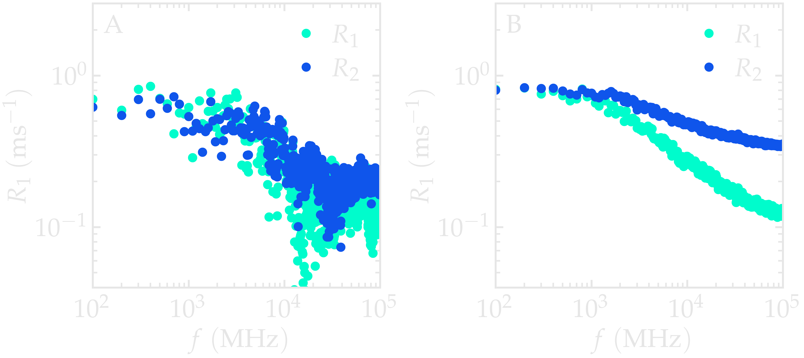
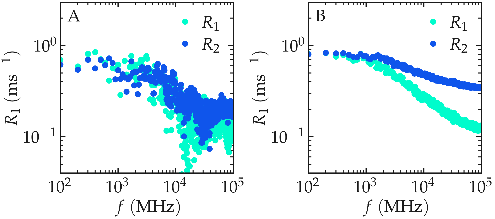
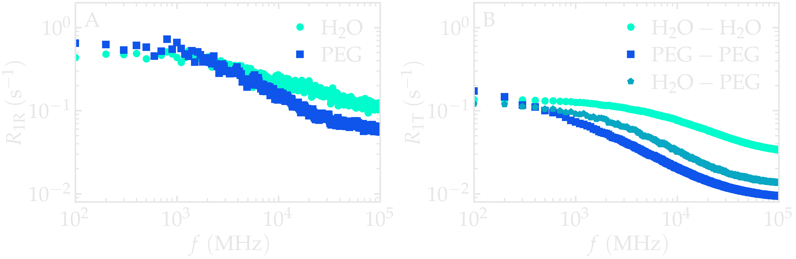
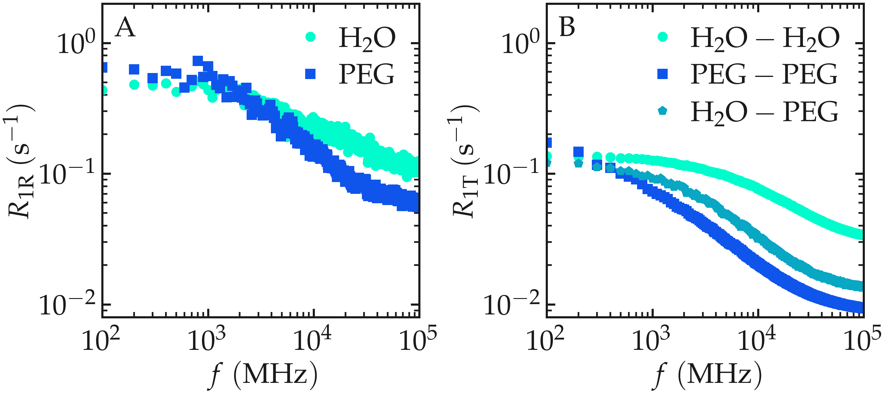

Tutorial¶
In this tutorial, we compute the proton (\(^1\mathrm{H}\)) NMR
relaxation properties of a polymer–water mixture directly from a
molecular dynamics trajectory generated using LAMMPS. We use
NMRDfromMD to calculate the longitudinal and transverse relaxation
times (\(T_1\) and \(T_2\)), extract the frequency-dependent
relaxation rates (\(R_1(f)\) and \(R_2(f)\)), and separate the
intra- and intermolecular contributions to the relaxation.
By the end of this tutorial, you will understand both the basic
NMRDfromMD workflow and the physical meaning of the quantities
computed by the package.
NMR relaxation originates from fluctuations of the local magnetic fields generated by neighbouring nuclear spins. In liquids, these fluctuations are driven by molecular motion, making relaxation measurements sensitive to rotational diffusion, translational diffusion, and molecular structure. Molecular dynamics simulations provide the atomic trajectories needed to predict these relaxation properties directly.
To follow the tutorial, MDAnalysis, NumPy, and Matplotlib must be installed.
Note
If you’d like to learn LAMMPS and generate your own trajectories, beginner tutorials are available here [24].
System¶
{kind=link}

{kind=link}

The simulated system consists of a bulk mixture containing 420 \(\mathrm{H_2O}\) molecules and 30 \(\mathrm{PEG\ 300}\) polymer molecules. Water is described using the \(\mathrm{TIP4P}-\epsilon\) force field [25]. \(\mathrm{PEG\ 300}\) denotes polyethylene glycol chains with a molar mass of \(300~\mathrm{g/mol}\).
The trajectory was recorded during a \(10~\text{ns}\) production run performed using the open-source code LAMMPS in the \(NpT\) ensemble with a timestep of \(1~\text{fs}\). The temperature was set to \(T = 300~\text{K}\) and the pressure to \(p = 1~\text{atm}\).
Atomic positions were saved to the production.xtc trajectory every
\(2~\mathrm{ps}\).
Only the saved configurations are analysed by NMRDfromMD.
Consequently, the temporal resolution of the calculated correlation
functions is determined by the trajectory sampling interval
(\(2~\mathrm{ps}\)), rather than by the
\(1~\mathrm{fs}\) integration timestep used during the molecular
dynamics simulation. This distinction is important because all correlation
functions computed later are limited by this sampling interval.
File preparation¶
To access the LAMMPS input files and pre-computed trajectory data, either download the zip archive or clone the peg-water-mixture dataset repository:
git clone https://github.com/NMRDfromMD/dataset-peg-water-mixture.git
The required trajectory files are located in the data/ directory.
Important
The trajectory files are stored using Git Large File Storage (Git LFS). This means that after cloning the repository, you must download the actual trajectory data before using it.
If Git LFS is not installed, install it first:
apt install git-lfs
git lfs install
Then retrieve the trajectory files:
git lfs pull
Alternatively, you can regenerate the trajectory by rerunning the LAMMPS simulation scripts provided in the repository.
Import the simulation data into Python¶
Open a new Python script or Notebook, and define the path to the data files:
datapath = "mypath/polymer-in-water/data/"
Then, import NumPy, MDAnalysis, and the NMRD
module of NMRDfromMD:
import numpy as np
import MDAnalysis as mda
from nmrdfrommd import NMRD
From the trajectory files, create a universe by loading the
configuration file and trajectory:
u = mda.Universe(datapath+"production.data",
datapath+"production.xtc")
The Universe is the central object in MDAnalysis. It combines the system topology (atom identities, masses, molecule definitions, etc.) with the time-dependent atomic coordinates. In this tutorial, NMRDfromMD uses the Universe to access both the molecular structure and the atomic trajectories required to compute dipolar correlation functions and NMR relaxation properties.
Before starting the analysis, it is useful to verify that the system has been correctly loaded and to inspect its basic composition.
n_TOT = u.atoms.n_residues
n_H2O = u.select_atoms("type 6 7").n_residues
n_PEG = u.select_atoms("type 1 2 3 4 5").n_residues
print(f"The total number of molecules is {n_TOT} ({n_H2O} H2O, {n_PEG} PEG)")
Executing the script using Python will return:
The total number of molecules is 450 (420 H2O, 30 PEG)
This output confirms that the simulation contains the expected 450 molecules, correctly partitioned into 420 water molecules and 30 PEG chains.
Let us also print information concerning the trajectory,
namely the timestep, timestep and
the total duration of the simulation, total_time:
timestep = np.int32(u.trajectory.dt)
total_time = np.int32(u.trajectory.totaltime)
print(f"The timestep is {timestep} ps")
print(f"The total simulation time is {total_time//1000} ns")
Executing the script using Python will return:
The timestep is 2 ps
The total simulation time is 10 ns
In MDAnalysis, the timestep refers to the time interval between two
stored frames in the trajectory file, not the integration timestep used
in the molecular dynamics simulation. In this tutorial, the trajectory was generated with LAMMPS using a
1 fs integration timestep, but atomic configurations were written to the
production.xtc file every 2 ps. As a result, the timestep reported by
MDAnalysis corresponds to this 2 ps sampling interval, which determines the
temporal resolution of all subsequent correlation functions and relaxation calculations.
Run the \(^1\text{H}\) NMR relaxation analysis¶
The NMR relaxation calculation is performed on selected nuclei. Here we create three atom groups: the hydrogen atoms belonging to PEG, the hydrogen atoms belonging to water, and the combined set containing all hydrogen atoms:
H_PEG = u.select_atoms("type 3 5")
H_H2O = u.select_atoms("type 7")
H_ALL = H_PEG + H_H2O
Next, we run NMRDfromMD for all hydrogen atoms:
nmr_all = NMRD(
u=u,
atom_group=H_ALL,
number_i=20)
nmr_results = nmr_all.run_analysis()
On a standard laptop (Intel Core i9-12900H processor), this step typically takes 1-2 minutes.
The runtime depends mainly on three factors:
(i) the number of selected reference atoms (number_i),
(ii) the number of atoms in the system,
and (iii) the number of saved trajectory frames.
The parameter number_i controls how many reference hydrogen atoms are
randomly selected for the calculation. Computing the dipolar interaction
for every hydrogen atom can become computationally expensive in large
systems. Instead, NMRDfromMD samples a subset of reference atoms
while retaining all neighbouring atoms. This strategy provides an unbiased
estimate of the relaxation rates while reducing computational cost.
This sampling reduces the computational cost at the expense of increased statistical
uncertainty.
Increasing number_i improves the statistical precision of the
calculated relaxation rates, while setting number_i = 0 includes all
eligible atoms in the calculation.
All calculated values are stored within the nmr_results dictionary.
Lets first extract the NMR relaxation time \(T_1\) in
the limit \(f \to 0\), add the following lines to the Python script:
T1 = nmr_results["T1"]
print(f"The NMR relaxation time is T1 = {T1:.2f} s")
The output should be similar to:
The NMR relaxation time is T1 = 1.59 s
The exact value may vary slightly between runs because the reference
atoms are selected randomly whenever number_i > 0. Increasing
number_i reduces this statistical uncertainty, whereas setting
number_i = 0 performs the calculation for every hydrogen atom in the
selected group.
Extract the \(^1\text{H}\)-NMR spectra¶
Although the zero-frequency relaxation time is often reported
experimentally, NMRDfromMD computes the complete relaxation
dispersion over a wide frequency range. The longitudinal and transverse
relaxation rates,
are available for every frequency \(f\) (in MHz) as nmr_all.R1
and nmr_all.R2. The corresponding frequencies are stored in
nmr_all.f.
R1_spectrum = nmr_results["R1"]
R2_spectrum = nmr_results["R2"]
f = nmr_results["f"]
The spectra \(R_1 (f)\) and \(R_2 (f)\) can then be plotted as a
function of \(f\) using pyplot:
from matplotlib import pyplot as plt
# Plot settings
plt.figure(figsize=(8, 5))
plt.loglog(f, R1_spectrum, 'o', label='R1', markersize=5)
plt.loglog(f, R2_spectrum, 's', label='R2', markersize=5)
# Labels and Title
plt.xlabel("Frequency (MHz)", fontsize=12)
plt.ylabel("Relaxation Rates (s⁻¹)", fontsize=12)
# Grid and boundaries
plt.grid(True, which="both", linestyle='--', linewidth=0.7)
plt.xlim(80, 1e5)
plt.ylim(0.05, 2)
# Legend
plt.legend()
plt.tight_layout()
plt.show()
The resulting spectra should resemble the figure below (panel A). For an isotropic liquid, \(R_1(f)\) and \(R_2(f)\) are expected to approach similar values in the low-frequency limit. In this regime, both relaxation rates probe the low-frequency limit of the spectral density, which is dominated by long-time molecular reorientations and translational diffusion.
Because only number_i = 20 reference atoms are sampled here, the
spectra exhibit noticeable statistical noise. Repeating the calculation
with a larger value of number_i produces much smoother curves, as
shown in panel B.


Figure: (A) \(^1\text{H}\)-NMR relaxation
rates \(R_1\) and \(R_2\) as a
function of the frequency \(f\) for the
\(\text{PEG-H}_2\text{O}\) bulk mixture. Results are given for
a small value of number_i, \(n_i = 20\).
(B) Same quantity as in panel A, but with \(n_i = 1300\).
Separating intra and intermolecular¶
So far, the relaxation rates were calculated without distinguishing between intra- and intermolecular interactions. One of the major advantages of molecular dynamics simulations is that every dipolar interaction can be classified according to whether it originates from two nuclei within the same molecule or from two different molecules. This separation is generally not accessible from experimental measurements alone.
Let us extract the intramolecular contributions to the relaxation for both water and PEG, separately:
nmr_h2o_intra = NMRD(
u=u,
atom_group=H_H2O,
type_analysis="intra_molecular",
number_i=200)
result_h2o_intra = nmr_h2o_intra.run_analysis()
nmr_peg_intra = NMRD(
u=u,
atom_group=H_PEG,
type_analysis="intra_molecular",
number_i=200)
result_peg_intra = nmr_peg_intra.run_analysis()
Similarly, we can also measure the intermolecular contributions:
nmr_h2o_inter = NMRD(
u=u,
atom_group=H_H2O,
type_analysis="inter_molecular",
number_i=20)
result_h2o_inter = nmr_h2o_inter.run_analysis()
nmr_peg_inter = NMRD(
u=u,
atom_group=H_PEG,
type_analysis="inter_molecular",
number_i=20)
result_peg_inter = nmr_peg_inter.run_analysis()
The intermolecular contribution is
computed only between molecules belonging to the same chemical species.
For example, nmr_h2o_inter includes interactions between different
water molecules, but not between water and PEG molecules.
The water-PEG intermolecular contribution can be computed by selecting
water hydrogen atoms as the reference group (atom_group) and PEG
hydrogen atoms as the interacting partner group (neighbor_group):
nmr_h2o_peg = NMRD(
u=u,
atom_group=H_H2O,
neighbor_group=H_PEG,
number_i=20)
result_h2o_peg = nmr_h2o_peg.run_analysis()
In this case, the analysis is already restricted to intermolecular
interactions between two different molecular species. Therefore, it is
not necessary to explicitly set type_analysis="inter_molecular".
Comparing the calculated spectra reveals that the intramolecular contribution is larger than the intermolecular one for this system. More importantly, the two contributions exhibit distinct frequency dependences because they originate from different molecular motions. Intramolecular relaxation is mainly governed by rotational motion and internal molecular flexibility, whereas intermolecular relaxation reflects translational diffusion and inter-molecular collisions.


Figure: Intramolecular \(^1\text{H}\)-NMR relaxation rates \(R_{1 \text{R}}\) (A) and Intermolecular \(^1\text{H}\)-NMR relaxation rates \(R_{1 \text{T}}\) (B) as a function of the frequency \(f\) for PEG and \(\text{H}_2\text{O}\) separately. Results are shown for \(n_i = 1280\).